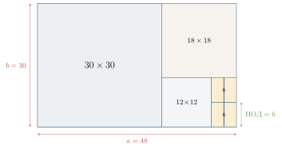
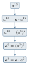
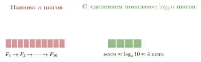
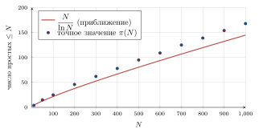
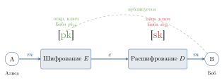
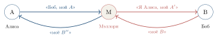
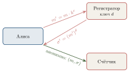
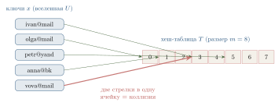

6 Элементы теории чисел и шифрование
«Математика — царица наук, а теория чисел — царица математики», — говорил Карл Фридрих Гаусс почти двести лет назад. Долгое время теория чисел считалась самой «чистой» из математических дисциплин — занимающейся ради красоты и никак не связанной с практикой. Сегодня, в эпоху Интернета, банковских карт и мессенджеров, эта наука оказалась едва ли не самой востребованной: без неё не отправить безопасное сообщение, не оплатить покупку и не зайти на сайт по защищённому соединению.
В этой главе мы пройдём путь от античного алгоритма Евклида до современных криптографических протоколов, обеспечивающих безопасность в Интернете. Один и тот же небольшой набор фактов о делимости и сравнениях по модулю окажется работающим везде — от шифрования RSA до структуры данных для подсчёта различных элементов в больших потоках.
Читатель встретит три «слоя» материала:
Теоретико-числовой фундамент: алгоритм Евклида, малая теорема Ферма, функция Эйлера, тесты простоты — классические результаты, без которых не существует современной криптографии.
Криптографические протоколы: симметричное и асимметричное шифрование, RSA и Диффи–Хеллман, электронная цифровая подпись, схемы электронного голосования.
Вероятностные алгоритмы: универсальное хеширование, счётчики HyperLogLog, измерение «социального расстояния» в графах больших сетей.
Многие из изученных конструкций ежесекундно работают внутри устройств читателя: каждое HTTPS-соединение, каждый клик в банковском приложении, каждый запрос в поисковике — результат применения математических фактов, которым посвящена эта глава.
6.1 Элементы теории чисел
6.1.1 Делимость, остатки и сравнения по модулю
Целые числа — самые знакомые объекты в математике, и кажется, что про них трудно сказать что-то новое. Однако именно из вопросов о делимости целых чисел вырос целый раздел математики — теория чисел, — и именно её результаты сейчас работают внутри каждого мессенджера и банковской карты.
Говорят, что целое число a делится на целое число b \neq 0 (или что b делит a), если существует такое целое число q, что a = b\cdot q. Пишут b \mid a.
Если a не делится на b, то всё равно можно записать
a = b\cdot q + r, \qquad 0 \le r < |b|.
Это знакомое со школы деление с остатком. Число q называется неполным частным, а r — остатком от деления a на b. Остаток обозначают также a \bmod b (читается «a по модулю b»).
17 = 5\cdot 3 + 2, поэтому 17 \bmod 5 = 2.
-17 = 5\cdot(-4) + 3, поэтому (-17)\bmod 5 = 3 (остаток — неотрицательное число!).
Простые числа — «атомы» делимости.
Натуральное число p > 1 называется простым, если оно делится только на единицу и на само себя. Натуральное n > 1, не являющееся простым, называется составным.
Первые простые числа: 2, 3, 5, 7, 11, 13, 17, 19, 23, 29, \ldots. Простых чисел бесконечно много — это доказал ещё Евклид (доказательство мы повторим в п. 6.1).
Основная теорема арифметики говорит, что любое натуральное число n > 1 единственным (с точностью до порядка) способом раскладывается в произведение простых:
n = p_1^{\alpha_1} \cdot p_2^{\alpha_2} \cdots p_k^{\alpha_k}.
Сравнения по модулю. В каждой задаче, где важна только «остаточная» информация (например, день недели в зависимости от номера дня в году), удобно вместо чисел рассматривать их остатки от деления на некоторое фиксированное число.
Пусть m \ge 2 — натуральное число (модуль). Целые числа a и b называются сравнимыми по модулю m, если их разность a - b делится на m. Пишут
a \equiv b \,(\mathrm{mod}\,m).
Равносильное определение: a \equiv b \,(\mathrm{mod}\,m) тогда и только тогда, когда a и b дают одинаковые остатки при делении на m.
23 \equiv 9 \,(\mathrm{mod}\,7), потому что 23 - 9 = 14 = 2\cdot 7.
В обоих случаях остаток от деления на 7 равен 2.
Сравнения — очень удобный язык, потому что они ведут себя как обычные равенства: их можно складывать, вычитать, умножать и возводить в степень.
Если a \equiv b \,(\mathrm{mod}\,m) и c \equiv d \,(\mathrm{mod}\,m), то:
a + c \equiv b + d \,(\mathrm{mod}\,m);
a - c \equiv b - d \,(\mathrm{mod}\,m);
a \cdot c \equiv b \cdot d \,(\mathrm{mod}\,m);
a^n \equiv b^n \,(\mathrm{mod}\,m) для любого натурального n.
Доказательство. По определению a - b = m\cdot k_1 и c - d = m\cdot k_2. Тогда (a + c) - (b + d) = m(k_1 + k_2) делится на m. Для умножения: ac - bd = ac - bc + bc - bd = c(a-b) + b(c-d), что тоже делится на m. Возведение в степень — следствие умножения. \square
С делением ситуация сложнее. Нельзя «просто так» поделить обе части сравнения — например, 6 \equiv 0 \,(\mathrm{mod}\,6), но «сократив на 2», получим 3 \equiv 0 \,(\mathrm{mod}\,6), что неверно. Когда деление законно — мы разберём чуть позже, после знакомства с алгоритмом Евклида.
Сравнения встречаются повсюду в жизни. Часы — арифметика по модулю 12 (или 24): если сейчас 10 часов, то через 5 часов будет 10 + 5 = 15 \equiv 3 \,(\mathrm{mod}\,12). День недели — арифметика по модулю 7. Контрольная цифра ИНН, номер банковской карты, штрихкод книги — все они вычисляются как сумма цифр (с разными весами) по некоторому модулю.
6.1.2 Алгоритм Евклида
Одна из главных операций в теории чисел — нахождение наибольшего общего делителя (НОД) двух чисел.
Наибольший общий делитель чисел a и b (не равных одновременно нулю) — это наибольшее натуральное число, на которое делятся одновременно и a, и b. Обозначается \gcd(a,b).
Если \gcd(a,b) = 1, то числа a и b называются взаимно простыми.
Как найти \gcd(a,b)? Можно, например, разложить оба числа на простые множители и взять общие. Но при больших числах разложение на множители — очень тяжёлая задача (об этом мы поговорим в конце параграфа). К счастью, ещё в III веке до н. э. Евклид предложил способ, который работает несравнимо быстрее.
Геометрическая идея. Представим себе прямоугольник со сторонами a и b, причём a > b. Будем «выкладывать» в него квадраты со стороной b, пока это возможно. Когда останется полоска со сторонами b и r = a \bmod b, повторим процедуру для неё, и так далее. Когда выкладывание закончится точным квадратом — сторона этого последнего квадрата и есть \gcd(a,b) (рис. 6.1).

Численно это соответствует последовательным делениям с остатком:
\begin{aligned} 48 &= 1\cdot 30 + 18,\\ 30 &= 1\cdot 18 + 12,\\ 18 &= 1\cdot 12 + 6,\\ 12 &= 2\cdot 6 + 0 \;\;\Longrightarrow\;\; \gcd(48,30) = 6. \end{aligned}
Почему это работает? Ключевое наблюдение: если a = bq + r, то \gcd(a, b) = \gcd(b, r). Действительно, любое число, делящее a и b, делит и r = a - bq; обратно, любое число, делящее b и r, делит и a = bq + r. Значит, у пар (a,b) и (b,r) один и тот же набор общих делителей — и, следовательно, один и тот же \gcd. На каждом шаге второй аргумент уменьшается; раньше или позже он станет нулём, и тогда первое число — искомый НОД.
Вход: натуральные числа a, b, a \ge b > 0.
Выход: \gcd(a,b).
Если b = 0, вернуть a.
Иначе вычислить r = a \bmod b и повторить с парой (b, r).
На псевдокоде:
function gcd(a, b):
while b \ne 0:
a, b := b, a mod b
return a
Скорость работы. Сколько шагов делает алгоритм? Можно доказать (теорема Ламе, 1844 г.): число делений в алгоритме Евклида для \gcd(a,b) не превосходит примерно 5\log_{10}\min(a,b). Это значит, что для чисел в сотни цифр (а такие числа реально используются в криптографии) НОД находится за несколько сотен делений — доли секунды.
6.1.3 Расширенный алгоритм Евклида
Поразительный факт: Евклид нашёл не только \gcd, но и способ представить его в виде «целочисленной линейной комбинации» исходных чисел.
Для любых натуральных a, b существуют целые числа x, y (не обязательно положительные), такие что
a\cdot x + b\cdot y = \gcd(a,b).
Эти x, y называются коэффициентами Безу. Найти их позволяет расширенный алгоритм Евклида: при делениях с остатком мы заодно «отслеживаем», как выражается каждый текущий остаток через исходные a и b.
Пример: те же 48 и 30. Прокрутим цепочку делений «снизу вверх», выражая 6 (наш НОД) через всё бо’льшие числа.
\begin{aligned} 6 &= 18 - 1\cdot 12 && \text{(из третьего деления)}\\ &= 18 - 1\cdot (30 - 1\cdot 18) = 2\cdot 18 - 1\cdot 30 && \text{(подставили } 12 = 30 - 18 \text{)}\\ &= 2\cdot (48 - 1\cdot 30) - 1\cdot 30 = 2\cdot 48 - 3\cdot 30 && \text{(подставили } 18 = 48 - 30 \text{)} \end{aligned}
Получили: \boxed{2\cdot 48 + (-3)\cdot 30 = 6}. Коэффициенты Безу: x = 2, y = -3.
Проверим: 2\cdot 48 - 3\cdot 30 = 96 - 90 = 6 = \gcd(48,30). Совпадает.
Удобно вести расчёт в таблице:
| шаг | r | q | x | y |
|---|---|---|---|---|
| 0 | 48 | — | 1 | 0 |
| 1 | 30 | — | 0 | 1 |
| 2 | 18 | 1 | 1 | -1 |
| 3 | 12 | 1 | -1 | 2 |
| 4 | 6 | 1 | 2 | -3 |
| 5 | 0 | 2 | — | — |
В каждой строке выполняются равенства r = 48 x + 30 y. На предпоследней строке (где r = \gcd = 6) и считываются коэффициенты.
6.1.4 Решение линейных сравнений
Применим то, что получили, к решению уравнений в модулярной арифметике.
Обратный элемент по модулю. В обычной арифметике число, обратное к a, — это 1/a: при умножении даёт единицу. По модулю m обратным к a называется такое целое a^{-1}, что
a \cdot a^{-1} \equiv 1 \,(\mathrm{mod}\,m).
Например, по модулю 7: 3\cdot 5 = 15 = 2\cdot 7 + 1 \equiv 1 \,(\mathrm{mod}\,7), значит, 3^{-1} \equiv 5 \,(\mathrm{mod}\,7).
Обратный элемент к a по модулю m существует тогда и только тогда, когда \gcd(a, m) = 1. При этом он находится с помощью расширенного алгоритма Евклида.
Доказательство. Если \gcd(a,m) = 1, то по теореме 6.9 существуют целые x, y, такие что ax + my = 1. Это сравнение по модулю m принимает вид ax \equiv 1 \,(\mathrm{mod}\,m), то есть x \equiv a^{-1} \,(\mathrm{mod}\,m).
Обратно, если a\cdot a^{-1} \equiv 1 \,(\mathrm{mod}\,m), то a \cdot a^{-1} - 1 = m\cdot k для некоторого k, откуда любой общий делитель a и m должен делить 1, — значит, \gcd(a,m) = 1.\square
Найдём 11^{-1} \,(\mathrm{mod}\,26). Применяем расширенный алгоритм Евклида к (26,11):
\begin{aligned} 26 &= 2\cdot 11 + 4,\\ 11 &= 2\cdot 4 + 3,\\ 4 &= 1\cdot 3 + 1,\\ 3 &= 3\cdot 1 + 0. \end{aligned}
\gcd = 1. Раскручиваем:
\begin{aligned} 1 &= 4 - 1\cdot 3 = 4 - (11 - 2\cdot 4) = 3\cdot 4 - 11\\ &= 3\cdot (26 - 2\cdot 11) - 11 = 3\cdot 26 - 7\cdot 11. \end{aligned}
Значит, -7\cdot 11 \equiv 1 \,(\mathrm{mod}\,26), то есть 11^{-1} \equiv -7 \equiv 19 \,(\mathrm{mod}\,26). Проверка: 11\cdot 19 = 209 = 8\cdot 26 + 1.
Линейные сравнения. Уравнение вида
a\cdot x \equiv b \,(\mathrm{mod}\,m)
называется линейным сравнением. Если \gcd(a,m) = 1, его решение находится «домножением на обратный»: x \equiv a^{-1}\cdot b \,(\mathrm{mod}\,m).
6.1.5 Быстрое возведение в степень
В криптографии нужно уметь вычислять выражения вида a^n \bmod m для огромных n (порядка 2^{1000}). Если в лоб умножать a на себя n раз — это никогда не закончится: даже за миллиард умножений в секунду на это ушло бы больше времени, чем существует Вселенная.
Спасает идея «разделяй и властвуй», известная также как бинарное возведение в степень. Идея проста: разделим показатель пополам:
a^n = \begin{cases} \bigl(a^{n/2}\bigr)^2, & n\text{ чётно},\\[2pt] a\cdot \bigl(a^{(n-1)/2}\bigr)^2, & n\text{ нечётно}. \end{cases}
Каждое такое деление пополам уменьшает показатель примерно вдвое, поэтому всего нужно около \log_2 n шагов вместо n (рис. 6.2).

Каждый «спуск» делит показатель примерно на 2, поэтому всего получается около \log_2 n шагов. Для n = 2^{1000} это тысяча умножений вместо 2^{1000}.
На псевдокоде:
function powmod(a, n, m):
result := 1
a := a mod m
while n > 0:
if n is odd:
result := (result \ast a) mod m
a := (a \ast a) mod m
n := n div 2
return result
Вычислим 7^{13} \bmod 23. Запишем 13 = 1101_2, то есть 13 = 8 + 4 + 1. Значит, 7^{13} = 7^{8}\cdot 7^{4}\cdot 7^{1}. Считаем последовательно по модулю 23:
7^1 = 7,\quad 7^2 = 49 \equiv 3,\quad 7^4 \equiv 3^2 = 9,\quad 7^8 \equiv 9^2 = 81 \equiv 81 - 3\cdot 23 = 12.
Тогда 7^{13} \equiv 12\cdot 9\cdot 7 = 756 \equiv 756 - 32\cdot 23 = 756 - 736 = 20 \,(\mathrm{mod}\,23). Всего — около пяти умножений вместо тринадцати.
Та же идея в другом месте: числа Фибоначчи. Знакомая со школы последовательность Фибоначчи задаётся рекуррентно:
F_0 = 0,\quad F_1 = 1,\quad F_{n+1} = F_n + F_{n-1}.
На первый взгляд, чтобы вычислить F_n, нужно сделать n сложений — линейное время. Однако и здесь работает «разделяй и властвуй»! Запишем рекуррентное соотношение в матричной форме:
\begin{pmatrix} F_{n+1} \\ F_n \end{pmatrix} \;=\; \begin{pmatrix} 1 & 1 \\ 1 & 0 \end{pmatrix} \begin{pmatrix} F_n \\ F_{n-1} \end{pmatrix}.
Обозначим матрицу как A. Применяя её n раз к вектору (F_1, F_0)^\top = (1,0)^\top, получим:
\begin{pmatrix} F_{n+1} \\ F_n \end{pmatrix} \;=\; A^n \begin{pmatrix} 1 \\ 0 \end{pmatrix}.
Прямое доказательство — индукцией по n.
Тем самым задача сводится к возведению матрицы 2{\times}2 в степень n. Но матрицы можно перемножать «делением пополам» точно так же, как числа! Сложность — O(\log n) матричных умножений, то есть около \log_2 n операций; вместо линейного числа шагов получается логарифмическое (рис. 6.3).

Этот пример замечателен тем, что показывает: даже линейная на первый взгляд задача может «прятать» внутри себя структуру, ускоряющую решение экспоненциально.
6.1.6 Функция Эйлера и малая теорема Ферма
Чем дальше, тем интересней. Сейчас мы введём одну функцию, играющую ключевую роль в современной криптографии.
Функцией Эйлера \varphi(n) называется количество натуральных чисел в отрезке [1, n], взаимно простых с n.
\varphi(1) = 1, \varphi(2) = 1, \varphi(6) = 2 (а именно, числа 1 и 5), \varphi(10) = 4 (числа 1, 3, 7, 9).
Случай простого числа. Если p — простое число, то с p не взаимно прост лишь сам p среди чисел 1, 2, \ldots, p. Значит,
\boxed{\;\varphi(p) = p - 1\;}\quad \text{для простого } p.
Случай произведения двух простых. Пусть n = p\cdot q, где p, q — различные простые. Какие числа из [1, n] не взаимно просты с n? Только кратные p или кратные q. Кратных p ровно q штук (это p, 2p, \ldots, qp); кратных q ровно p штук; единственное число, кратное обоим, — pq = n. По формуле включений-исключений:
\varphi(pq) = pq - p - q + 1 = (p-1)(q-1).
Это короткое наблюдение — сердце алгоритма RSA, который мы изучим в § 6.3.
\varphi(15) = \varphi(3\cdot 5) = 2\cdot 4 = 8. Действительно, взаимно простыми с 15 в отрезке [1,15] являются числа \{1, 2, 4, 7, 8, 11, 13, 14\} — ровно 8 чисел.
В общем виде: для n = p_1^{\alpha_1}\cdots p_k^{\alpha_k} выполняется \varphi(n) = n\prod_{i=1}^k\!\bigl(1 - \tfrac{1}{p_i}\bigr), но эта формула нам сегодня понадобится только в указанных двух частных случаях.
Малая теорема Ферма. Один из самых красивых результатов классической теории чисел.
Пусть p — простое число и a — целое, не делящееся на p. Тогда
a^{p-1} \equiv 1 \,(\mathrm{mod}\,p).
Равносильно: для любого целого a выполняется a^p \equiv a \,(\mathrm{mod}\,p).
Доказательство. Рассмотрим набор \{a, 2a, 3a, \ldots, (p-1)a\} — (p-1) ненулевых остатков, умноженных на a. Все они различны по модулю p: если ia \equiv ja \,(\mathrm{mod}\,p), то a(i-j) \equiv 0 \,(\mathrm{mod}\,p), а так как a не делится на p и |i-j| < p, получаем i = j.
Значит, набор \{a, 2a, \ldots, (p-1)a\} — это в точности (с точностью до порядка) набор \{1, 2, \ldots, p-1\} по модулю p. Перемножим всё:
a\cdot 2a\cdot 3a \cdots (p-1)a \;\equiv\; 1\cdot 2\cdot 3\cdots(p-1) \,(\mathrm{mod}\,p),
то есть a^{p-1}\cdot (p-1)! \equiv (p-1)! \,(\mathrm{mod}\,p). Поскольку (p-1)! взаимно прост с p, его можно «сократить» — получим a^{p-1} \equiv 1 \,(\mathrm{mod}\,p). \square
Обобщение — теорема Эйлера: a^{\varphi(n)} \equiv 1 \,(\mathrm{mod}\,n) для любого a, взаимно простого с n. Доказывается аналогично, только вместо чисел 1, \ldots, p-1 берутся все числа из [1,n], взаимно простые с n.
Пьер Ферма, по профессии юрист, посвящал математике вечера. В 1640 году он написал письмо своему другу с этим утверждением, заметив: «Я бы прислал доказательство, если бы не боялся, что оно слишком длинное». Первое известное полное доказательство опубликовал Леонард Эйлер — спустя сто лет.
6.1.7 Сколько вокруг простых чисел?
Прежде чем переходить к криптографии, ответим на важный практический вопрос: часто ли встречаются простые числа? Если простых чисел мало — ими нельзя будет полноценно пользоваться.
Пусть \pi(N) — количество простых чисел, не превосходящих N. Тогда
\pi(N) \;\sim\; \frac{N}{\ln N} \qquad \text{при } N \to \infty.
В пересчёте на «вероятность»: если случайно взять натуральное число вокруг N, оно окажется простым примерно с шансом 1/\ln N. Например, среди 1000-значных чисел простыми оказывается примерно одно из \ln 10^{1000} = 1000\ln 10 \approx 2300. Это совсем немало (рис. 6.4).

Практический смысл: чтобы найти простое число длиной, скажем, 1024 бита для RSA-ключа, нужно перебрать в среднем порядка 700 случайных чисел и каждое проверить на простоту. И это нас приводит к следующему вопросу.
6.1.8 Проверка простоты и задача факторизации
Два «двойственных» вопроса:
- Проверка простоты:
-
дано число n — простое оно или составное?
- Факторизация:
-
дано составное n — разложить его на простые множители.
Может показаться, что эти задачи примерно одинаковой сложности. Но это не так: они принципиально разной сложности, и именно на этом контрасте основана вся современная криптография.
Тест Ферма. Если p простое, то по теореме 6.18 для любого a, не кратного p, выполняется a^{p-1} \equiv 1 \,(\mathrm{mod}\,p). Возьмём это как пробный признак: если для случайного a выполнено a^{n-1} \not\equiv 1 \,(\mathrm{mod}\,n), то n заведомо не простое. Если же a^{n-1} \equiv 1 \,(\mathrm{mod}\,n) — то n простое с большой вероятностью (но иногда бывают и составные числа, проходящие тест — так называемые числа Кармайкла).
Тест Миллера–Рабина. Усовершенствованный вариант теста Ферма. Он использует ту же идею, но дополнительно «отсеивает» числа Кармайкла. Принципиальные свойства:
это вероятностный тест: при отрицательном ответе число точно составное; при положительном — простое с вероятностью ошибки не больше 1/4 за один проход;
делая k независимых проходов, мы уменьшаем вероятность ошибки до 4^{-k}. Уже при k = 20 это меньше, чем 10^{-12};
работает за время O(k\cdot \log^3 n) — то есть полиномиально от числа цифр.
Тест AKS (2002 г.). Манидра Агравал, Нираж Каял и Нитин Саксена — индийские математики — впервые предъявили детерминированный полиномиальный алгоритм проверки простоты. На практике он работает медленнее Миллера–Рабина, но важен как теоретическое достижение: показал, что класс задач, разрешимых за полиномиальное время, включает в себя проверку простоты.
Открытие AKS-алгоритма стало сенсацией: один из руководителей — Нитин Саксена — был на тот момент аспирантом первого года. Результат опубликован в 2004 году в одном из самых престижных математических журналов — «Annals of Mathematics» — и был назван «алгоритмом тысячелетия» в области теории чисел.
А что с факторизацией? Тут картина совсем другая. Лучший известный сегодня алгоритм — общий метод решета числового поля — работает за время, растущее как
\exp\!\bigl(c\cdot \sqrt[3]{(\ln n)(\ln\ln n)^{2}}\bigr),
что по сути субэкспоненциально, но не полиномиально. Для 1024-битных n это означает миллиарды лет работы суперкомпьютера.
Колоссальный разрыв в сложности: проверить, простое ли число — легко (полиномиально), а разложить число на простые множители — невероятно трудно (субэкспоненциально). Именно этот разрыв и эксплуатируется в RSA и других криптосистемах. Безопасность интернета прямо опирается на то, что у человечества пока нет быстрого алгоритма факторизации.
А если появится квантовый компьютер? В 1994 году Питер Шор предложил квантовый алгоритм, факторизующий числа за полиномиальное время. Реальных квантовых компьютеров достаточного масштаба пока нет (на 2025 год удавалось факторизовать лишь крошечные числа в качестве демонстрации). Но если такие компьютеры будут построены — современный RSA рухнет, и потребуются принципиально новые криптографические схемы (это направление называется постквантовая криптография).
Что мы получили
Подведём итог. На вопрос «зачем нам всё это в учебнике информатики» мы готовы ответить: только что мы построили инструменты, без которых не работает ни один защищённый сайт. А именно:
сравнения по модулю — язык, на котором будем описывать шифрование;
расширенный алгоритм Евклида — быстро ищет обратный элемент по модулю;
быстрое возведение в степень — позволяет работать с гигантскими степенями;
малая теорема Ферма и функция Эйлера — ключ к схеме RSA;
разрыв в сложности между проверкой простоты и факторизацией — источник «безопасности».
В следующих параграфах мы соберём из этих кирпичиков работающие криптографические протоколы.
Найдите \gcd(231, 165) алгоритмом Евклида. Представьте НОД в виде 231 x + 165 y.
Найдите 5^{-1} \,(\mathrm{mod}\,37). Используйте расширенный алгоритм Евклида.
Вычислите 3^{100} \bmod 7, пользуясь малой теоремой Ферма.
Сколько существует чисел в отрезке [1, 100], взаимно простых с 100? (Подсказка: 100 = 2^2\cdot 5^2, но вы можете использовать формулу для \varphi(p^2) или прямой подсчёт.)
Запишите быстрое возведение в степень в виде программы на знакомом вам языке программирования.
* Докажите, что для составного n всегда найдётся a из [2, n-1], для которого a^{n-1} \not\equiv 1 \,(\mathrm{mod}\,n) — кроме чисел Кармайкла. Найдите наименьшее число Кармайкла.
* С помощью матричной формулы для чисел Фибоначчи вычислите F_{20}.
6.2 Шифрование: от тайнописи к математической задаче
6.2.1 Зачем людям шифры
Каждый из вас, заходя на любой сайт по адресу, начинающемуся с https://, доверяет ему шифрование. Браузер и сервер обмениваются миллионами сообщений, но никто посторонний прочесть их не может. В этом параграфе мы поймём, какие задачи решает шифрование, какие общие схемы существуют и почему именно теория чисел оказалась его математической основой.
Античность. Первые шифры были чисто механическими. В Древней Греции (V век до н. э.) воины Спарты использовали скиталу — цилиндр определённого диаметра, на который наматывалась лента с текстом. Без точно такой же палочки прочесть сообщение было нельзя. Юлий Цезарь, по свидетельству Светония, в переписке со своими полководцами сдвигал каждую букву алфавита на три позиции: A → D, B → E, и так далее. Этот шифр Цезаря — простейший шифр замены (рис. 6.5).
Любой такой шифр легко взламывается: букв в алфавите немного, и можно просто перебрать все 25 возможных сдвигов. Более изобретательные шифры (например, шифр Виженера XVI века) использовали переменный сдвиг, заданный ключевым словом. Они продержались несколько столетий, пока в середине XIX века Чарлз Бэббидж и независимо Фридрих Касиски не предложили универсальный метод их взлома.
XX век: машины. Во время Второй мировой войны на сцену вышли электромеханические шифровальные машины — знаменитая немецкая Энигма, японская «Пурпурная» (Purple), советская «Фиалка». Их взлом стал отдельной героической страницей: в Великобритании Алан Тьюринг возглавлял проект Bletchley Park, где была сконструирована машина «Бомба», взламывавшая Энигму. Считается, что этот успех сократил войну в Европе на 2–4 года.
Деятельность Алана Тьюринга и его коллег была настолько секретной, что заслуги команды Bletchley Park были рассекречены только в 1970-х годах — то есть через 25 лет после конца войны. Сам Тьюринг при жизни так и не узнал о признании. Тьюринг также считается одним из отцов теоретической информатики — именно его именем названа престижная Премия Тьюринга, аналог «Нобелевской премии в информатике».
6.2.2 Общая схема симметричного шифрования
Все шифры до 1970-х годов имели одну общую особенность: для шифрования и расшифрования использовался один и тот же ключ. Такие шифры называются симметричными (или secret-key) (рис. 6.6).

Симметричные шифры быстры и до сих пор широко применяются (например, стандарт AES — то, чем шифруется содержимое любого Telegram-сообщения после установки соединения). Но у них есть фундаментальная проблема распределения ключей: как Алисе и Бобу договориться о ключе, если они никогда раньше не встречались, а связь между ними прослушивается?
Парадокс симметричного шифрования. Чтобы безопасно обмениваться сообщениями, нужен общий ключ. Чтобы безопасно передать ключ — нужен другой общий ключ. И так до бесконечности.
В большом мире (миллиарды пользователей интернета) задача распределения ключей становится непреодолимой: каждой паре нужен свой ключ, всего \binom{n}{2} \approx n^2/2 ключей.
6.2.3 Революция 1976 года: открытый ключ
В 1976 году произошёл прорыв, перевернувший всю криптографию. Уитфилд Диффи и Мартин Хеллман предложили принципиально новую идею: асимметричное шифрование, или криптография с открытым ключом.
Каждый пользователь имеет пару ключей:
открытый ключ (public key) — его можно (и нужно) сообщать всем: публиковать на сайте, отправлять незашифрованно;
закрытый ключ (private key) — он хранится в строжайшем секрете у владельца.
Ключевое свойство: что зашифровано открытым ключом — расшифровать может только владелец соответствующего закрытого ключа (рис. 6.7).

Заметьте: больше нет проблемы распределения ключей. Алиса не должна заранее ничего секретного передавать Бобу — она просто берёт его открытый ключ из открытого источника.
6.2.4 Односторонние функции и функции с секретом
В чём математическая суть асимметричной криптографии? В существовании односторонних функций.
Односторонняя функция (one-way function) — это функция f \colon X \to Y, обладающая двумя свойствами:
Прямое вычисление просто: зная x, легко (полиномиально быстро) вычислить f(x).
Обращение трудно: зная y = f(x), восстановить x без какой-либо дополнительной информации — задача практически нерешаемая (требует экспоненциального времени).
Существование «настоящих» односторонних функций математически не доказано (это связано с одной из главных нерешённых задач — проблемой \mathbf{P}\ne\mathbf{NP}). На практике мы используем функции, для которых обращение считается трудным, потому что человечество за десятилетия так и не научилось делать это быстро.
Хороший бытовой образ: разбить вазу — легко, собрать обратно — очень тяжело. Или: перемешать колоду карт — мгновенная операция, восстановить исходный порядок — немыслимо.
Главные примеры из теории чисел:
Умножение vs. факторизация: перемножить p\cdot q — мгновенно; разложить произведение на простые — трудно. Это база RSA.
Дискретный логарифм: возвести g в степень x по модулю p — быстро; зная g^x \bmod p, восстановить x — очень трудно. Это база схемы Диффи–Хеллмана.
Функции с секретом. Просто односторонней функции для асимметричного шифрования мало: нужно, чтобы у кого-то одного (владельца) была возможность всё-таки обратить функцию — именно для расшифрования сообщений (рис. 6.8).
Функция с секретом (trapdoor function) — односторонняя функция f, для которой существует дополнительная секретная информация t (лазейка, trapdoor), знание которой делает обращение f полиномиально быстрым.

Можно представить себе сейф с замком: запереть сейф (положить документ внутрь) может каждый, но открыть — только владелец ключа.
Идея использования. Открытый ключ задаёт функцию с секретом f. Кто угодно может вычислить c = f(m) — зашифровать сообщение. Для расшифрования нужно обратить f, что без секрета t — безнадёжно. У владельца секрета t это вычисление быстрое. Тем самым роль закрытого ключа — хранить лазейку t.
6.2.5 Где криптография работает прямо сейчас
Чтобы дальнейший материал не казался академическим упражнением, перечислим, в каких знакомых каждому ситуациях работают (часто прямо сейчас, пока вы это читаете) описанные в этой главе идеи.
Загрузка любого сайта (
https). Браузер договаривается с сервером о ключе через схему Диффи–Хеллмана, после чего весь трафик шифруется симметричным алгоритмом (AES).Мессенджеры (WhatsApp, Telegram, Signal). Используют так называемое сквозное шифрование (end-to-end): сервер мессенджера видит лишь шифр-текст. Согласование ключей — асимметричное.
Банковские карты и оплата. Транзакция от карты проходит через цепочку обмена цифровыми подписями.
Госуслуги и налоговая. Подача декларации сопровождается электронной цифровой подписью (ЭЦП), о которой подробно — в § 6.4.
Цифровой пропуск/QR-код (от билета в кино до подтверждения вакцинации). Содержит подпись эмитента, проверяемую его открытым ключом.
Криптовалюты. Биткойн и его «родственники» — огромная распределённая система с электронными подписями: кошелёк — это просто пара (открытый ключ, закрытый ключ).
Что должно быть у «правильной» криптосистемы. Когда мы строим конкретную схему, надо проверять, что она удовлетворяет следующим естественным требованиям:
Корректность. Если Алиса честно зашифровала открытым ключом Боба, Боб всегда расшифрует — ровно исходное сообщение.
Стойкость. Подслушивающий, видя только шифр-текст и открытый ключ, не может практически восстановить исходное сообщение.
Эффективность. Шифрование и расшифрование выполняются быстро (полиномиально).
Защита ключа. Закрытый ключ не должен «утекать» из открытого — даже зная открытый ключ, нельзя восстановить закрытый.
В следующих параграфах мы построим конкретные схемы — RSA и Диффи–Хеллман — и убедимся, что они этим требованиям удовлетворяют.
Зашифруйте шифром Цезаря со сдвигом 5 слово
INFORMATIKA.Почему симметричное шифрование плохо подходит для миллиарда пользователей? Подсчитайте, сколько ключей надо хранить.
Объясните своими словами, в чём состоит свойство «одностороннести» функции.
* Знаменитая Энигма имела примерно 10^{20} возможных стартовых установок. Хватило бы перебора, если перебирать миллион вариантов в секунду?
Приведите три бытовые операции, которые ведут себя как «односторонние функции».
6.3 Криптосистемы RSA и Диффи–Хеллмана
В этом параграфе мы построим две настоящие, работающие сегодня схемы асимметричной криптографии. Обе появились почти в одно время — между 1976 и 1978 годами — и обе опираются на результаты предыдущего параграфа.
6.3.1 Криптосистема RSA
Идея была опубликована в 1978 году тремя сотрудниками Массачусетского технологического института — Рональдом Райвестом, Шамиром (Ади Шамир) и Адлеманом (Леонард Адлеман). Их фамилии и дали название системе — RSA.
Генерация ключей. Каждый пользователь, желающий получать зашифрованные сообщения, выполняет одноразовую процедуру.
Выбрать два больших случайных различных простых числа p и q (на практике — по 1024 бита каждое).
Вычислить n = p\cdot q и \varphi(n) = (p-1)(q-1).
Выбрать целое e, взаимно простое с \varphi(n) (часто берут e = 65537).
С помощью расширенного алгоритма Евклида найти d такое, что
e\cdot d \equiv 1 \,(\mathrm{mod}\,\varphi(n)).
Открытый ключ: пара (n, e) — публикуется.
Закрытый ключ: число d — хранится в секрете.
Лишние данные: числа p, q, \varphi(n) безопасно уничтожаются.
Шифрование. Алиса хочет послать сообщение m Бобу. Сообщение представлено числом из отрезка [0, n-1] (длинное сообщение разбивается на блоки). Алиса берёт открытый ключ Боба (n, e) и вычисляет:
c \;=\; m^e \bmod n.
Число c называется шифр-текстом и передаётся открыто.
Расшифрование. Боб, получив c, использует свой закрытый ключ d и вычисляет:
m' \;=\; c^d \bmod n.
Утверждается: m' = m (рис. 6.9).

6.3.2 Почему RSA работает: корректность
В обозначениях процедуры RSA, для любого m \in [0, n-1] выполняется
(m^e)^d \equiv m \,(\mathrm{mod}\,n).
Доказательство. По построению e\cdot d \equiv 1 \,(\mathrm{mod}\,\varphi(n)), значит, найдётся целое k, такое что e\cdot d = 1 + k\cdot \varphi(n). Подставим:
m^{ed} = m^{1 + k\varphi(n)} = m\cdot \bigl(m^{\varphi(n)}\bigr)^k.
Случай 1. \gcd(m, n) = 1. Тогда по теореме Эйлера m^{\varphi(n)} \equiv 1 \,(\mathrm{mod}\,n), и
m^{ed} \equiv m\cdot 1^k = m \,(\mathrm{mod}\,n).
Случай 2. \gcd(m, n) > 1. Поскольку n = pq и p, q простые, это значит, что m делится либо на p, либо на q (но не на оба — иначе m \ge pq = n, чего быть не может). Рассмотрим, например, p \mid m. Тогда m \equiv 0 \,(\mathrm{mod}\,p), и обе части сравнения m^{ed} \equiv m \,(\mathrm{mod}\,p) обращаются в ноль — утверждение выполнено.
С другой стороны, \gcd(m, q) = 1, поэтому по малой теореме Ферма m^{q-1} \equiv 1 \,(\mathrm{mod}\,q). А значит, m^{(p-1)(q-1)} = m^{\varphi(n)} \equiv 1 \,(\mathrm{mod}\,q), и
m^{ed} = m\cdot \bigl(m^{\varphi(n)}\bigr)^k \equiv m\cdot 1^k = m \,(\mathrm{mod}\,q).
Получили m^{ed} \equiv m одновременно по модулям p и q. По китайской теореме об остатках (или просто потому, что разность m^{ed} - m делится и на p, и на q, а значит, на их произведение n) сравнение m^{ed} \equiv m \,(\mathrm{mod}\,n) выполнено. \square
Учебный пример (маленькие числа). Полноценный RSA использует тысячебитные числа, но для понимания работает и крошечный пример.
Пусть p = 11, q = 23. Тогда:
n = 11\cdot 23 = 253, \varphi(n) = 10\cdot 22 = 220.
Выберем e = 7. Проверим взаимную простоту: \gcd(7, 220) = 1.
Найдём d = 7^{-1} \bmod 220. Расширенным алгоритмом Евклида:
220 = 31\cdot 7 + 3,\quad 7 = 2\cdot 3 + 1.
Раскручиваем: 1 = 7 - 2\cdot 3 = 7 - 2(220 - 31\cdot 7) = 63\cdot 7 - 2\cdot 220. Значит, d = 63 (проверка: 7\cdot 63 = 441 = 2\cdot 220 + 1).
Открытый ключ: (253, 7). Закрытый ключ: d = 63.
Шифрование. Пусть m = 50. Считаем c = 50^7 \bmod 253 быстрым возведением:
50^2 = 2500 \equiv 2500 - 9\cdot 253 = 223,\qquad 50^4 \equiv 223^2 = 49\,729.
Делим 49\,729 / 253 \approx 196{,}5, 196\cdot 253 = 49\,588, остаток 141. Значит, 50^4 \equiv 141. Далее 50^7 = 50^4\cdot 50^2\cdot 50 \equiv 141\cdot 223\cdot 50 \bmod 253. Считаем: 141\cdot 223 = 31\,443 = 124\cdot 253 + 71, значит \equiv 71. Затем 71\cdot 50 = 3550 = 14\cdot 253 + 8, значит \equiv 8. Итак, c = 8.
Расшифрование. Боб считает c^d = 8^{63} \bmod 253. Вместо длинных вычислений «вручную» можно использовать малую теорему Ферма по модулям 11 и 23 раздельно, а затем китайскую теорему об остатках — именно так и поступают на практике. Ответ: 50.
Удивительный исторический парадокс: ровно та же схема была независимо открыта в 1973 году британским математиком Клиффордом Коксом, работавшим в Британском управлении правительственной связи (GCHQ). Но работа была засекречена и рассекречена только в 1997 году. К этому моменту Райвест, Шамир и Адлеман уже стали всемирно известными, основали компанию RSA Security, а Шамир получил Премию Тьюринга. Типичный пример того, как секретность тормозит развитие науки.
6.3.3 Почему RSA безопасен
Стойкость RSA опирается на предположение: задача факторизации n практически нерешаема при больших n.
Действительно, если злоумышленник умеет факторизовать n, он восстанавливает p, q, затем \varphi(n) = (p-1)(q-1) и наконец d = e^{-1} \bmod \varphi(n) — получит закрытый ключ. Обратное (что взлом RSA эквивалентен факторизации) также считается верным, но строго не доказано: это одна из открытых проблем в криптографии.
Заметим, что знать n и e (открытый ключ) — ещё далеко не значит знать \varphi(n). Знание \varphi(n) и знание разложения n = pq — одна и та же информация: ведь p + q = n - \varphi(n) + 1, а p - q = \sqrt{(p+q)^2 - 4n}. То есть «нахождение \varphi(n)» и «факторизация n» — задачи одинаковой сложности.
Почему нужны именно большие простые числа? Современный рекомендуемый размер n — 2048 или даже 4096 бит. Чтобы взломать 2048-битный RSA, нужно факторизовать число длиной около 617 десятичных цифр; лучший известный алгоритм потратит на это больше времени, чем существует Вселенная.
В 2020 году группе исследователей удалось факторизовать число RSA-250 (250 десятичных цифр \approx 829 бит). Заняло это около 2700 ядро-лет вычислений — то есть один компьютер с 2700 ядрами работал бы целый год. Это подтверждает, что 1024-битный RSA скоро будет «на грани», а 2048-битный — надолго безопасен.
Проверим выполнение требований из § 6.2.
Корректность — доказана теоремой выше.
Стойкость — опирается на сложность факторизации.
Эффективность — шифрование/расшифрование сводятся к возведению в степень по модулю, что мы умеем делать полиномиально (см. § 6.2).
Защита ключа — знание e, n не даёт быстрого способа найти d без факторизации.
6.3.4 Протокол Диффи–Хеллмана
Уитфилд Диффи и Мартин Хеллман решали несколько другую (хотя и родственную) задачу: договориться о секретном ключе по открытому каналу, — не передавая по нему ничего секретного. Их работа 1976 года так и называется: «Новые направления в криптографии».
Идея на пальцах: краски. Прежде чем вводить формулы, разберём наглядную аналогию (рис. 6.10).

Алиса и Боб условились о «жёлтой» базовой краске (известна всем). Каждый выбрал свою секретную краску (Алиса — красный, Боб — синий) и публично передал смесь «своя + жёлтая». Подслушивающий видит обе смеси, но не может разложить их обратно. А Алиса и Боб, добавив к чужой смеси свою секретную краску, приходят к одинаковому итогу: жёлт. + красн. + син.
Математическая реализация. Роль «смешивания» играет дискретное возведение в степень по модулю простого числа (рис. 6.11).
Подготовка (общедоступно): большое простое число p и целое g, 1 < g < p.
Алиса выбирает случайный секрет a \in [1, p-2] и посылает Бобу A = g^a \bmod p.
Боб выбирает случайный секрет b \in [1, p-2] и посылает Алисе B = g^b \bmod p.
Алиса вычисляет общий ключ: K = B^a \bmod p.
Боб вычисляет общий ключ: K = A^b \bmod p.
Результат. Алиса и Боб получили один и тот же ключ
K = g^{ab} \bmod p,
который никогда не передавался по каналу связи.

Учебный пример.
Пусть p = 23, g = 5.
Алиса выбирает a = 6, отправляет A = 5^6 \bmod 23. Считая последовательно по таблице степеней пятёрки:
5^1\equiv 5,\;5^2\equiv 2,\;5^3\equiv 10,\;5^4\equiv 4,\;5^5\equiv 20,\;5^6\equiv 8,
получаем A = 8.
Боб выбирает b = 15, отправляет B = 5^{15} \bmod 23. Продолжая таблицу:
5^7\equiv 17,\;5^8\equiv 16,\;5^9\equiv 11,\;5^{10}\equiv 9,\;5^{11}\equiv 22,
5^{12}\equiv 18,\;5^{13}\equiv 21,\;5^{14}\equiv 13,\;5^{15}\equiv 19,
получаем B = 19.
Алиса вычисляет общий ключ K = B^a = 19^6 \bmod 23. Замечая, что 19 \equiv -4 \,(\mathrm{mod}\,23), имеем (-4)^6 = 4^6 = 4096 = 178\cdot 23 + 2, значит, K = 2.
Боб вычисляет K = A^b = 8^{15} \bmod 23. Но 8 = 5^6, значит, 8^{15} = 5^{90}. По малой теореме Ферма 5^{22} \equiv 1 \,(\mathrm{mod}\,23), а 90 = 4\cdot 22 + 2, поэтому 5^{90} \equiv 5^2 = 2 \,(\mathrm{mod}\,23). Получаем K = 2.
Согласование удалось: общий ключ K = 2. И это притом, что числа a = 6 и b = 15 никогда не передавались по каналу!
Безопасность Диффи–Хеллмана. Чтобы подслушивающий, видя g, p, A, B, мог найти общий ключ K = g^{ab}, ему нужно сначала восстановить хотя бы один из секретов a или b, — то есть решить уравнение
g^a \equiv A \,(\mathrm{mod}\,p)
относительно a при известных g, A, p. Эта задача называется задачей дискретного логарифма (в группе \mathbb{Z}_{p}^*).
Для всех известных классических алгоритмов задача дискретного логарифма по модулю большого простого — субэкспоненциальная (примерно той же сложности, что и факторизация). Однако по модулю эллиптической кривой — значительно сложнее, и поэтому современные мессенджеры обычно используют вариант Диффи–Хеллмана не по модулю числа, а на эллиптических кривых (ECDH). Идея та же.
6.3.5 Атака «человек посередине»
И RSA, и Диффи–Хеллман в чистом виде уязвимы к одной атаке. Представим, что между Алисой и Бобом «вклинился» злоумышленник — Мэллори (Man-in-the-Middle) (рис. 6.12).

Мэллори перехватывает A от Алисы, заменяет на свой A' и пересылает Бобу. С Бобом он устанавливает один ключ, с Алисой — другой. Затем расшифровывает каждое сообщение, читает (и при желании меняет), снова шифрует и передаёт дальше. Внешне Алиса и Боб ничего не замечают.
Защита. Нужна аутентификация — способ убедиться, что собеседник действительно тот, за кого себя выдаёт. В реальных системах это решается через цифровые сертификаты и электронную цифровую подпись. О них — следующий параграф.
В системе RSA дано p = 7, q = 13, e = 5. Найдите n, \varphi(n) и d.
Используя ключ из задачи 1, зашифруйте сообщение m = 9.
В Диффи–Хеллмане положите p = 17, g = 3, a = 5, b = 7. Найдите A, B и общий ключ K.
Почему в RSA нельзя брать e = 1? А e = \varphi(n) - 1?
Что произойдёт, если в RSA Алиса случайно использует m \ge n?
* Объясните, как именно атака «человек посередине» работает в случае RSA (не Диффи–Хеллмана).
* Что вы посоветуете человеку, который хочет «шифровать всё своими силами без сертификатов»? Какие угрозы он не учитывает?
6.4 Применения RSA: аутентификация, цифровая подпись, электронное голосование
В предыдущем параграфе мы научились с помощью RSA передавать секретное сообщение. На первый взгляд кажется, что этого уже достаточно для всех задач сетевой безопасности. Однако в действительности шифрование решает лишь одну из проблем — конфиденциальность. Помимо неё, в современных системах необходимо обеспечивать ещё как минимум три:
Аутентификацию — уверенность, что вы общаетесь именно с тем, за кого себя выдаёт собеседник.
Целостность — уверенность, что сообщение не было незаметно изменено по дороге.
Неотказуемость — невозможность для отправителя впоследствии отказаться от своего сообщения («это не я отправлял»).
Удивительно, но все эти задачи можно решить с помощью той же самой схемы RSA, если применить её не «прямо», а наоборот — сначала закрытым ключом, а потом открытым. Об этом и пойдёт речь в этом параграфе.
6.4.1 Аутентификация: «докажи, что это ты»
Представим типичную ситуацию: Алиса заходит в свой личный кабинет на сайте банка. Банк хочет убедиться, что это действительно его клиентка, а не злоумышленник, подсмотревший пароль.
Самый простой подход — запросить пароль. Но у него есть очевидные недостатки: пароль можно подсмотреть, перехватить, угадать, заставить пользователя его выдать. Кроме того, чтобы проверить пароль, банк должен хранить его (или его хеш — см. §6.5) у себя на серверах. А значит, при взломе сервера утечёт сразу множество паролей.
Криптография позволяет построить намного более изящную схему, в которой секрет вообще никогда не передаётся по сети.
Сторона A должна доказать стороне B, что обладает неким секретом, не выдавая никакой информации о самом секрете. Идея, кажущаяся парадоксальной, на практике вполне реализуема и лежит в основе многих криптографических протоколов.
Простейший пример — протокол challenge-response («запрос–ответ») на базе RSA. Пусть у Алисы заведена пара ключей: открытый (e, n) опубликован в системе банка, а закрытый d хранится только у неё (например, в специальном USB-токене или в защищённом хранилище смартфона).
Запрос (challenge). Банк генерирует случайное число r (0 < r < n), запоминает его и отсылает Алисе.
Ответ (response). Алиса вычисляет s = r^{d} \bmod n, используя свой закрытый ключ, и отправляет s обратно.
Проверка. Банк вычисляет r' = s^{e} \bmod n и сравнивает с тем r, которое он отсылал. Если r' = r, проверка пройдена.
Почему это работает? В предыдущем параграфе мы доказали, что для любого r выполняется
(r^{d})^{e} \equiv r \pmod n.
То есть только тот, кто знает d, может «правильно» преобразовать r так, чтобы после открытого преобразования \cdot^{e} получилось снова r. Любой другой пользователь, не знающий d, может лишь угадывать ответ — а вероятность угадать одно нужное число из миллиарда миллиардов исчезающе мала.
Почему это безопасно?
Алиса не передаёт свой закрытый ключ d — он остаётся у неё.
Каждый раз r случайное и новое. Поэтому даже если злоумышленник перехватит весь сеанс и услышит пару (r, s), в следующий раз банк пришлёт другое r, и старый ответ s не подойдёт. Атака повторного воспроизведения (replay attack) исключена.
Банк не хранит секретов клиента: у него лишь открытый ключ, утечка которого ничем не страшна.
Схему этого протокола в графическом виде даёт рис. 6.13.

В современных смартфонах закрытый ключ d хранится в специальном чипе — защищённом анклаве (Secure Enclave у Apple, Trusted Execution Environment на Android). Этот чип физически не позволяет считать закрытый ключ извне. На него можно лишь «передать» число и попросить выполнить с ним операцию \cdot^d \bmod n. Так устроены, например, биометрические разблокировки — отпечаток пальца «разрешает» чипу применить ключ, но не извлекает его.
6.4.2 Электронная цифровая подпись
Аутентификация решает задачу «докажи, что ты — это ты». Теперь рассмотрим родственную, но другую: «докажи, что именно ты отправил именно это сообщение». Эта задача стоит особенно остро при подписании документов: договоров, заявлений, налоговых деклараций.
Бумажная подпись от руки выполняет сразу две функции: идентифицирует автора и связывает его с конкретным документом. К сожалению, при простом копировании в электронном виде это свойство теряется: цифровое изображение подписи легко вырезать и приклеить к любому документу. Нужна принципиально иная конструкция.
Электронная цифровая подпись (ЭЦП) — это короткий блок данных \sigma, привязываемый к документу m, обладающий двумя свойствами:
только владелец секретного ключа может сгенерировать \sigma для произвольного m;
любой желающий, зная открытый ключ, может проверить, что \sigma действительно соответствует m и подписан данным владельцем.
Идея конструкции на основе RSA удивительно проста и красива: достаточно поменять местами роли ключей в шифровании.
Алиса имеет открытый ключ (e, n) и закрытый d. Хочет подписать документ m (0 < m < n).
Подпись. Алиса вычисляет
\sigma = m^{d} \bmod n
и публикует пару (m, \sigma).
Проверка. Любой проверяющий вычисляет m' = \sigma^{e} \bmod n и сравнивает с m. Если m' = m, подпись подлинна.
Почему это подпись? По тому же самому соотношению (m^{d})^{e} \equiv m \pmod n. Только владелец закрытого ключа d может построить такое \sigma, что после возведения в степень e получится исходное m. Если бы это умел кто-то другой, он, по сути, умел бы разлагать n на множители — а это, как мы обсуждали, считается практически невыполнимой задачей.
Привязка к документу. В отличие от рукописной подписи, ЭЦП зависит от содержимого: если изменить хоть один бит в m, изменится и \sigma. Невозможно «отделить» подпись от документа и приклеить её к другому: для другого документа потребуется заново вычислять \cdot^{d} \bmod n, что без d невыполнимо (рис. 6.14).

Проблема большого документа. В реальности документ может быть огромным (например, несколько мегабайт). Возводить миллион байтов в степень d по модулю n слишком медленно. Поэтому в практических системах поступают иначе:
вычисляют хеш (короткий «отпечаток») документа: h = H(m) — небольшое число, скажем, длиной в 256 бит;
подписывают именно хеш: \sigma = h^{d} \bmod n.
При проверке вычисляют h' = H(m) заново и сравнивают \sigma^{e} \bmod n с h'. О хеш-функциях и их математическом устройстве пойдёт речь в §6.5.
В Российской Федерации электронная цифровая подпись юридически приравнена к собственноручной с 2002 года (закон № 1-ФЗ «Об электронной цифровой подписи», заменён в 2011 году на № 63-ФЗ «Об электронной подписи»). С помощью ЭЦП сегодня сдают налоговую отчётность, регистрируют недвижимость, участвуют в государственных закупках — всё это без бумажных носителей. Криптографические алгоритмы, используемые в российских ЭЦП, описаны в стандарте ГОСТ Р 34.10–2012; математически они близки к описанной RSA-схеме, но используют не модулярное возведение в степень, а операции на так называемых эллиптических кривых.
6.4.3 Электронное голосование
С распространением Интернета возникает естественный вопрос: можно ли перевести голосование — например, выборы или опросы — в цифровой формат? На первый взгляд, это просто: создать сайт, попросить каждого выбрать вариант, посчитать голоса. На деле возникает несколько противоречивых требований, и решить их одновременно — содержательная криптографическая задача.
Хорошая система электронного голосования должна одновременно обеспечивать:
Корректность: каждый имеющий право проголосовать голосует не более одного раза.
Анонимность: никто, включая организаторов, не может сопоставить конкретного избирателя с его голосом.
Проверяемость: избиратель может убедиться, что его голос учтён, а наблюдатели — что общий подсчёт верен.
Неподдельность: никто не может вбросить «лишние» голоса.
Заметим противоречие между пунктами 1 и 2: чтобы убедиться, что Алиса голосует не дважды, надо как-то её опознать; но если её опознали, как сохранить анонимность? На бумажных выборах эта задача решается физически (список явки и тайная урна разделены), а в цифровом мире — математически. Ключевой инструмент — слепая цифровая подпись, предложенная Дэвидом Чаумом ещё в 1982 году.
Слепая подпись. Идея слепой подписи: можно подписать документ, не зная его содержания. Этот странный, казалось бы, инструмент имеет естественный аналог в офлайне.
Представьте: вы кладёте лист бумаги в конверт, внутри которого вложена копирка. Затем просите начальника поставить подпись на конверте. Подпись через копирку переходит и на лист внутри. Раскрыв конверт, вы получаете подписанный документ, причём начальник никогда не видел его содержания.
Слепая RSA-подпись — это математическая реализация той же идеи: «копирка» — модулярное умножение на случайный множитель.
Формально схема устроена так. Пусть у центра голосования есть RSA-ключи (e, n) (открытый) и d (закрытый).
Алиса хочет получить подпись центра под её бюллетенем m, не раскрывая центру содержимое.
Алиса выбирает случайное k, взаимно простое с n, и вычисляет ослеплённое сообщение
m' = m \cdot k^{e} \bmod n.
Отправляет m' центру.
Центр (после проверки, что Алиса действительно имеет право голоса) ставит подпись:
\sigma' = (m')^{d} \bmod n = m^{d} \cdot k^{ed} \bmod n = m^{d} \cdot k \bmod n.
Возвращает \sigma' Алисе.
Алиса снимает ослепление: вычисляет
\sigma = \sigma' \cdot k^{-1} \bmod n = m^{d} \bmod n.
Получена настоящая RSA-подпись центра под её бюллетенем m, хотя центр никогда не видел m.
Где здесь теория чисел. Заметим, что на шаге 3 Алиса делит на k, точнее — умножает на k^{-1} \bmod n. Существование обратного по модулю n обеспечивается тем, что \gcd(k, n) = 1, и его можно эффективно вычислить расширенным алгоритмом Евклида (§6.1). Кроме того, в выкладке использовалось k^{ed} \equiv k \pmod n — следствие малой теоремы Ферма (точнее, её обобщения — теоремы Эйлера, гласящей, что k^{\varphi(n)} \equiv 1 \pmod n для \gcd(k, n) = 1).
Сам протокол голосования. На базе слепой подписи строится следующая схема (в упрощённом виде; подробности — в книге Музыкантского и Фурина).
Подготовка. Алиса формирует бюллетень m — например, число, кодирующее её выбор, плюс случайный «уникальный идентификатор» r, чтобы исключить совпадение бюллетеней.
Получение подписи. Алиса ослепляет m, отправляет m' Регистратору. Регистратор проверяет по своему списку, что Алиса имеет право голосовать и ещё не получала подпись, и возвращает \sigma'. Алиса снимает ослепление и получает (m, \sigma).
Анонимная отправка. Через анонимный канал (например, через сеть посредников или с другого устройства) Алиса отправляет (m, \sigma) Счётчику.
Подсчёт. Счётчик проверяет подпись \sigma: если она верна и идентификатор r ранее не встречался — голос засчитан.
Почему это работает.
Корректность. Регистратор контролирует, что одна и та же Алиса не получит подпись дважды.
Анонимность. Регистратор знает, кто такая Алиса, но не видит содержимого m (оно ослеплено). Счётчик видит m и \sigma, но не знает, кому принадлежит подпись — лишь то, что она поставлена настоящим Регистратором.
Неподдельность. Без знания закрытого ключа d невозможно сгенерировать \sigma к произвольному m — это потребовало бы взлома RSA.
Проверяемость. Список \{(m, \sigma)\} публикуется. Алиса может убедиться, что её (m,\sigma) в списке; любой наблюдатель может пересчитать сумму, не зная имён.
Общую идею протокола поясняет рис. 6.15.

Системы электронного голосования на основе слепой подписи (и более сложных схем) уже применялись на практике: например, в Эстонии часть выборов проходит через интернет с 2005 года, в России на муниципальных выборах в Москве с 2019 года использовалась система на базе криптографических конструкций (правда, на основе не только RSA, но и других схем — с гомоморфным шифрованием и блокчейном). Подробное обсуждение разных схем электронного голосования можно найти в книге Музыкантского и Фурина «Лекции по криптографии».
6.4.4 Итог параграфа
Мы увидели, что одна и та же конструкция RSA — модулярное возведение в степень — решает четыре совершенно разные задачи:
\boxed{\;\text{шифрование}\;} \qquad \boxed{\;\text{аутентификация}\;} \qquad \boxed{\;\text{цифровая подпись}\;} \qquad \boxed{\;\text{слепая подпись}\;}
Различие лишь в том, в каком порядке применяются операции \cdot^{e} и \cdot^{d} и какие именно числа подставляются на вход. В этом одна из главных красот современной криптографии: глубокая математическая идея даёт целый каскад прикладных решений.
Объясните своими словами, в чём принципиальная разница между «шифрованием с открытым ключом» и «цифровой подписью», если в обеих схемах используются одни и те же ключи и одна и та же формула.
Почему в протоколе аутентификации банк каждый раз присылает новое случайное r, а не одно и то же?
В схеме ЭЦП Алиса публикует пару (m, \sigma). Что произойдёт, если она опубликует пару (m', \sigma) с изменённым m' \ne m? Сможет ли она тем самым обмануть проверяющего?
* В схеме слепой подписи покажите подробной выкладкой, что после снятия ослепления получается именно m^d \bmod n (используйте k^{ed} \equiv k \pmod n).
* Предложите простую (возможно, наивную) атаку на схему голосования, если из протокола убрать пункт о случайном идентификаторе r в бюллетене.
* Подумайте, какие ещё свойства бумажного бюллетеня (например, возможность переголосовать, защита от принуждения) электронное голосование решает плохо. Каковы возможные подходы?
6.5 Хеширование: теория чисел встречается с рандомизацией
В предыдущих параграфах мы видели, как теория чисел даёт «жёсткие» гарантии безопасности: вычислить нужный ответ практически невозможно из-за вычислительной сложности задачи факторизации. Сейчас мы рассмотрим совсем другой тип использования теории чисел — вероятностные алгоритмы, в которых правильность работы достигается не «навсегда», а в среднем, с очень высокой вероятностью.
Главная мысль: добавив в алгоритм случайный выбор (на этапе настройки, ещё до запуска), можно гарантировать, что для любых входных данных алгоритм работает в среднем хорошо. Принципиальное отличие от наивного «алгоритм работает хорошо для случайных данных» в том, что входные данные могут быть какими угодно — даже подобраны злоумышленником, — а случайность спрятана внутри алгоритма.
Этот параграф следует изложению из классической книги С. Дасгупты, Х. Пападимитриу и У. Вазирани «Алгоритмы»1, в котором роль теории чисел особенно прозрачна.
6.5.1 Задача быстрого поиска
Представьте сервис электронной почты, в котором зарегистрировано сто миллионов пользователей. Каждый пользователь идентифицируется адресом, скажем, длиной до 30 символов. При каждом входе нужно мгновенно (за время, не зависящее от размера базы) определить: есть ли такой пользователь, и если есть — найти его данные.
Технически: имеется большая «вселенная» возможных ключей U (всех допустимых адресов), и интересующее нас подмножество S \subseteq U из n реальных пользователей. Мы хотим организовать структуру данных, позволяющую за O(1) операций проверять, лежит ли x \in S, и получать данные, связанные с x.
Прямая адресация. Самое простое решение — завести массив, индексируемый всеми элементами U. Такой массив имеет длину |U|. Если |U| велико (а оно колоссально: количество всевозможных 30-символьных строк — это 26^{30}, что больше 10^{42}), это решение нереализуемо: не хватит памяти всей планеты.
Идея хеширования. Вместо того, чтобы выделять ячейку под каждый возможный элемент, заведём массив размера m \approx n (того же порядка, что число реальных пользователей), и зададим хеш-функцию h: U \to \{0, 1, \dots, m-1\}, которая каждому ключу сопоставляет номер ячейки.
Хеш-функция — это произвольная функция h: U \to \{0, 1, \dots, m-1\}. По ней строится хеш-таблица: массив T[0], T[1], \dots, T[m-1]. Ключ x \in U хранится в ячейке T[h(x)].
Если двум разным ключам x \ne y присвоилось одно и то же значение h(x) = h(y), мы говорим, что произошла коллизия.
Иллюстрация работы хеш-функции и появления коллизий приведена на рис. 6.16.

Если коллизий нет (или их мало), мы успешно сжали огромную вселенную ключей в небольшую таблицу. Если же коллизий много, эффективность падает: на одну ячейку приходится много ключей, поиск замедляется.
6.5.2 Беда детерминированного хеширования
Зафиксируем какую-нибудь конкретную хеш-функцию — например, h(x) = x \bmod m (в предположении, что ключи x представлены как целые числа). На большинстве входов работает прекрасно. Но злоумышленник, зная нашу функцию, может специально подобрать набор ключей S = \{0, m, 2m, 3m, \dots\} — все они дают одинаковый остаток 0. Все они попадут в одну ячейку. Хеш-таблица деградирует до линейного списка, и каждый поиск занимает O(n) вместо O(1).
Этот сценарий не теоретический: реальные сетевые сервисы испытывали атаки именно такого рода — атаки «алгоритмическим усложнением», когда поток специально подобранных запросов приводил к замедлению сервера в тысячи раз.
Для любой фиксированной хеш-функции h найдётся «плохой» набор ключей, на котором коллизий очень много. Никакая «гениальная» формула h не спасает.
Спасает другое: не фиксировать h заранее, а выбирать её случайно из специального семейства функций.
6.5.3 Универсальное семейство хеш-функций
Идея, восходящая к Картеру и Вегману (1977), состоит в следующем. Договоримся об целом семействе хеш-функций \mathcal{H} = \{h_a\}. При создании хеш-таблицы выберем из \mathcal{H} случайную функцию h_a. Эта функция и будет использоваться. Поскольку выбор делается уже после того, как зафиксированы данные (или независимо от них), злоумышленник заранее не знает, какая h_a будет применена, и не может «подстроиться» под неё.
Чтобы это сработало, семейство \mathcal{H} должно обладать специальным свойством.
Семейство хеш-функций \mathcal{H} = \{h: U \to \{0, \dots, m-1\}\} называется универсальным, если для любых двух различных ключей x, y \in U (x \ne y) вероятность коллизии при случайном выборе h \in \mathcal{H} не превосходит 1/m:
\Pr_{h \in \mathcal{H}}[\,h(x) = h(y)\,] \le \frac{1}{m}.
Поясним: если бы h присваивала каждому ключу совершенно случайный номер ячейки из m возможных, вероятность совпадения двух конкретных ключей в одной ячейке составила бы ровно 1/m. Универсальное семейство просит лишь того же порядка — вероятность не больше 1/m.
Если хеш-функция выбрана из универсального семейства, то математическое ожидание числа коллизий заданного ключа x с прочими n - 1 ключами таблицы не превосходит (n-1)/m. В частности, если m \ge n, среднее число коллизий не превосходит 1.
Доказательство. Введём индикаторы: X_y = 1, если h(x) = h(y), иначе X_y = 0. Общее число коллизий ключа x есть \sum_{y \in S, y \ne x} X_y. По линейности математического ожидания:
\mathbb{E}\!\left[\sum X_y\right] = \sum \mathbb{E}[X_y] = \sum \Pr[h(x) = h(y)] \le (n-1) \cdot \frac{1}{m}.
\square
Таким образом, для m \approx n в среднем на одну ячейку приходится не более одной–двух коллизий, и время поиска остаётся константным.
Где встречается случайность. Подчеркнём: математическое ожидание берётся по случайному выбору h, а не по случайному выбору ключей! Сами ключи могут быть «худшими из возможных» — утверждение всё равно справедливо. Это и есть сила рандомизации.
6.5.4 Конструкция универсального семейства через теорию чисел
Теперь самый интересный вопрос: как же построить такое семейство \mathcal{H}? И вот тут на сцену выходит теория чисел.
Шаг 1: представление ключа. Будем считать, что каждый ключ x \in U — это вектор из k небольших чисел: x = (x_1, x_2, \dots, x_k). Например, если ключ — это IP-адрес вида 192.168.0.1, его естественно представить как четвёрку чисел (192, 168, 0, 1). Если ключ — это строка, разобьём её на четвёрки или восьмёрки байтов.
Пусть каждое x_i лежит в диапазоне 0 \le x_i < p, где p — простое число, чуть большее размера наших значений.
Шаг 2: выбор размера таблицы. Положим m = p. (В этом разделе для простоты принимаем такое допущение; в общем случае схема легко обобщается.)
Шаг 3: семейство \mathcal{H}. Для каждого вектора a = (a_1, \dots, a_k), где 0 \le a_i < p, определим хеш-функцию:
h_a(x) = \big( a_1 x_1 + a_2 x_2 + \dots + a_k x_k \big) \bmod p.
Семейство \mathcal{H} = \{h_a : a \in \{0, \dots, p-1\}^k\}. Размер семейства — p^k.
Шаг 4: случайный выбор. При построении таблицы выбираем a случайно равновероятно из \{0, \dots, p-1\}^k (например, генератором случайных чисел).
Описанное выше семейство \mathcal{H} универсально.
Доказательство. Возьмём два разных ключа x = (x_1, \dots, x_k) и y = (y_1, \dots, y_k), x \ne y. Поскольку x \ne y, найдётся хотя бы один индекс i, в котором x_i \ne y_i; без ограничения общности будем считать i = 1.
Коллизия h_a(x) = h_a(y) означает:
a_1 x_1 + a_2 x_2 + \dots + a_k x_k \equiv a_1 y_1 + a_2 y_2 + \dots + a_k y_k \pmod p,
или, после перестановки,
a_1 (x_1 - y_1) \equiv -\sum_{i=2}^{k} a_i (x_i - y_i) \pmod p. \qquad (\ast)
Обозначим правую часть как R. Заметим, что R зависит от a_2, \dots, a_k, но не зависит от a_1.
Здесь и появляется теория чисел. Поскольку p — простое, а x_1 - y_1 \ne 0 \pmod p (по нашему предположению x_1 \ne y_1, и оба они в диапазоне [0, p), значит их разность ненулевая по модулю p), у числа (x_1 - y_1) существует и единственен обратный элемент (x_1 - y_1)^{-1} \bmod p. Это — ровно то свойство модулярной арифметики над простым модулем, которое мы доказали в §6.1 (расширенный алгоритм Евклида).
Следовательно, уравнение (\ast) имеет ровно одно решение относительно a_1 при фиксированных a_2, \dots, a_k:
a_1 = R \cdot (x_1 - y_1)^{-1} \bmod p.
Среди p возможных значений a_1 только одно приводит к коллизии. Поэтому условная вероятность коллизии (при фиксированных a_2, \dots, a_k) равна 1/p. Усреднив по a_2, \dots, a_k, получаем
\Pr_a[h_a(x) = h_a(y)] = \frac{1}{p} = \frac{1}{m}.
\square
Ключевую роль играет то, что p — простое. Будь p составным, у числа x_1 - y_1 могло бы не быть обратного (если бы оно делилось на общий с p множитель), и тогда уравнение a_1 \cdot (x_1 - y_1) \equiv R \pmod p либо не имело бы решения, либо имело несколько — и аккуратной оценки 1/p не получилось бы.
Так теорема единственности обратного элемента по простому модулю, открытая в античности, оказывается фундаментом современных структур данных, ежесекундно работающих во всех серверах мира.
6.5.5 Пример: маленькая хеш-таблица
Пусть простое p = 7 (значит, и m = 7), а ключи — двойки чисел из \{0, 1, \dots, 6\}, то есть k = 2. Возьмём пять «настоящих» ключей:
S = \{(1, 2),\ (3, 4),\ (5, 5),\ (2, 6),\ (4, 1)\}.
Случайно выбираем a = (a_1, a_2). Например, пусть случайный генератор выдал a = (3, 5). Тогда h_a(x) = (3 x_1 + 5 x_2) \bmod 7:
| ключ x | 3 x_1 + 5 x_2 | \bmod 7 |
|---|---|---|
| (1, 2) | 3 + 10 = 13 | 6 |
| (3, 4) | 9 + 20 = 29 | 1 |
| (5, 5) | 15 + 25 = 40 | 5 |
| (2, 6) | 6 + 30 = 36 | 1 |
| (4, 1) | 12 + 5 = 17 | 3 |
Получаем коллизию: (3,4) и (2,6) попали в ячейку 1. Если бы случайный генератор выдал другое a, например a = (2, 1), картина была бы другой:
| ключ x | 2 x_1 + x_2 | \bmod 7 |
|---|---|---|
| (1, 2) | 4 | 4 |
| (3, 4) | 10 | 3 |
| (5, 5) | 15 | 1 |
| (2, 6) | 10 | 3 |
| (4, 1) | 9 | 2 |
Снова коллизия (правда, в другой ячейке: (3,4) и (2,6) дали 3). Удивительно: эти два ключа коллидируют при разных a. Дело в том, что (3, 4) - (2, 6) = (1, -2), и многие a удовлетворяют a_1 - 2 a_2 \equiv 0 \pmod 7. Однако в среднем по всем a вероятность коллизии любых двух конкретных ключей — ровно 1/7, как и обещает теорема.
6.5.6 Применения хеширования
Универсальное хеширование — одна из самых востребованных конструкций в современной информатике. Вот лишь несколько мест, где оно работает:
Поиск дубликатов и быстрая выборка. Все базы данных, все таблицы соответствий в операционных системах, все словари в языках программирования (Python:
dict, JavaScript:Map, Java:HashMap) построены на хешировании.Проверка целостности файлов. Контрольные суммы при скачивании файла (CRC, MD5, SHA) — по сути, хеш-функции. Если хеш скачанного файла не совпадает с заявленным, файл повреждён.
Цифровая подпись. Как мы видели в §6.5, RSA-подпись на самом деле ставится не на весь документ, а на его хеш.
Антивирусы и системы обнаружения дубликатов. База вирусных сигнатур — это хеши известных вредоносных файлов; чтобы проверить, не заражён ли файл, антивирус считает его хеш и ищет в базе.
Blockchain. В криптовалютах хеш каждого блока включается в следующий блок, образуя цепочку, в которой невозможно незаметно подправить «прошлое».
В этом параграфе мы говорили о «простых» хеш-функциях, минимизирующих коллизии. В криптографии используется родственное, но более сильное понятие — криптографическая хеш-функция. От неё требуется не только малое число коллизий, но и вычислительная невозможность найти два разных входа с одинаковым хешем (collision resistance), а также найти прообраз заданного хеша (preimage resistance). Примеры таких функций — SHA-256, BLAKE2, в России — «Стрибог» (ГОСТ Р 34.11–2012). Внутри они устроены сложнее (и не на основе модулярной арифметики), но используют тот же общий принцип: смешать входные биты так, чтобы малейшее изменение во входе приводило к радикальному изменению в выходе.
Для простого p = 5, k = 1 и a = 3 найдите h_a(x) = a x \bmod p для всех x \in \{0, 1, 2, 3, 4\}.
Пусть ключи — пары (x_1, x_2), p = 11, a = (4, 7). Найдите коллидирует ли пара (1, 3) с парой (8, 1) при таком a.
Объясните, что произойдёт с оценкой 1/m, если в семействе Картера–Вегмана взять p составным (например, p = 6).
Почему в формуле хеш-функции h_a(x) = (a_1 x_1 + \dots + a_k x_k) \bmod p нет «свободного члена» a_0, как в линейной функции a x + b? Что изменится, если его добавить?
* Покажите, что если выбирать a всего лишь из множества \{1\} (одно значение), то семейство не универсально.
* Покажите, что вероятность того, что у заданного ключа не будет коллизий ни с каким из n-1 других ключей в таблице размера m \ge n, не меньше 1/2 (используйте неравенство Маркова).
6.6 Счётчики с короткой памятью HyperLogLog и эксперимент Стенли Мильграма
В этом, заключительном параграфе главы мы рассмотрим ещё один сюжет на стыке теории чисел, теории вероятностей и информатики — задачу, в которой важно подсчитывать число различных объектов в огромном потоке данных, не имея возможности хранить их все. Это пригодится для задачи, на первый взгляд несвязанной с криптографией: измерения «социальных расстояний» в больших сетях, и проверки знаменитой гипотезы Стенли Мильграма о шести рукопожатиях.
Изложение в этом параграфе опирается на главу 7 книги Литвак и Райгородского «Кому нужна математика?»2, которую мы рекомендуем для самостоятельного изучения.
6.6.1 Задача подсчёта различных элементов
Представьте, что вы работаете в большой интернет-компании и хотите узнать: сколько уникальных пользователей зашло сегодня на сайт? Не общее число обращений (его легко посчитать инкрементируя счётчик при каждом запросе), а именно различных людей.
Точное решение. Простое и очевидное: завести множество (например, хеш-таблицу из §6.5), и при каждом приходящем идентификаторе пользователя проверять, есть ли он там; если нет — добавить и увеличить счётчик. По окончании дня размер множества — ответ.
Проблема. Если число уникальных пользователей — сотни миллионов или миллиарды, такая таблица занимает гигабайты памяти. Для одной задачи на одном сервере — допустимо. А если таких задач тысячи, и каждая на каждом из тысяч серверов? Память становится узким местом.
Возникает естественный вопрос: можно ли подсчитать число различных элементов в потоке приближённо, но используя гораздо меньше памяти? Например, дать ответ с относительной погрешностью \pm 2\%, заняв всего несколько килобайт?
Удивительно, но ответ положительный. И построение такого алгоритма опирается на красивые идеи теории вероятностей и — что нам особенно интересно — использует хеш-функции, родственные тем, что мы изучали в §6.5.
6.6.2 Идея: «самый длинный хвост нулей»
Алгоритм, который мы сейчас опишем (он называется HyperLogLog, предложен Филиппом Флажоле и его коллегами в 2007 году), основан на одной красивой вероятностной идее.
Пусть у нас есть «хорошая» хеш-функция h, которая для каждого входного объекта (например, идентификатора пользователя) выдаёт случайную на вид последовательность из L битов. Слово «случайную» означает: для разных входов биты выглядят как независимые подбрасывания монеты3.
Наблюдение. Если число h(x) действительно ведёт себя случайно, то рассмотрим, сколько нулей подряд стоит в начале двоичной записи h(x).
Вероятность, что первый бит — ноль: 1/2.
Вероятность, что первые два бита — нули: 1/4.
Вероятность, что первые k битов — нули: 1/2^k.
Наглядно эта закономерность показана на рис. 6.17.

Иначе говоря, если в потоке встречается элемент x, такой что h(x) начинается, скажем, с 20 нулей подряд, это значит, что в потоке скорее всего побывало порядка 2^{20} \approx 10^6 различных элементов — иначе крайне маловероятно увидеть такое редкое событие.
Базовый алгоритм («одиночный счётчик»).
Заведём одну переменную M = 0.
Для каждого приходящего элемента x потока:
вычислим h(x);
посчитаем число \rho(h(x)) — длину начального блока нулей в h(x), плюс единица;
обновим M \leftarrow \max(M, \rho(h(x))).
На выходе оценим число различных элементов как \widehat{n} = 2^M.
Память. Чтобы хранить M от 0 до L (где L — длина хеша, скажем, 32 бита), достаточно шести битов памяти. Шесть битов — чтобы оценить число различных элементов в потоке любой длины!
Проблема. Эта оценка очень шумная: одно «случайно длинное» обнуление сбивает её в большую сторону, а его отсутствие — в меньшую. Дисперсия чудовищная.
6.6.3 Идея «несколько счётчиков»
Чтобы сгладить случайные колебания, разделим поток на много подпотоков и усредним результаты. Это и есть алгоритм HyperLogLog.
Выберем число b — скажем, b = 10, — и заведём 2^b = 1024 независимых счётчика M_0, M_1, \dots, M_{2^b - 1}. Каждый счётчик — 6 битов.
Для каждого приходящего элемента x:
вычислим h(x) длины L;
первые b битов h(x) интерпретируем как номер счётчика j, 0 \le j < 2^b;
к остальным L - b битам применяем правило: \rho = длина начального блока нулей плюс 1;
обновляем: M_j \leftarrow \max(M_j, \rho).
На выходе оцениваем
\widehat{n} = \alpha_b \cdot 2^b \cdot \left( \frac{1}{2^b} \sum_{j=0}^{2^b-1} 2^{-M_j} \right)^{-1},
где \alpha_b — известная константа корректировки (для b = 10 примерно 0.7213).
Почему так? Формула в третьем шаге — это гармоническое среднее величин 2^{M_j}, а не простое арифметическое. Гармоническое среднее устойчиво к выбросам (одно случайно большое M_j его существенно не искажает) — именно поэтому HyperLogLog так точен.
Относительная погрешность оценки \widehat{n} по сравнению с истинным значением n имеет порядок 1.04/\sqrt{2^b}. При b = 10 это примерно 3.25\%; при b = 14 — около 0.81\%.
Память. При b = 14 имеется 2^{14} = 16\,384 счётчиков по 6 битов — всего \approx 12 КБ. И этим объёмом мы оцениваем число уникальных элементов в потоке длиной до \approx 10^{18} с точностью около 1\%! (рис. 6.18)

HyperLogLog встроен в Redis (популярную систему кэширования), в Google BigQuery (язык запросов к огромным базам данных), в систему аналитики ВКонтакте, в инфраструктуру PostgreSQL и многих других сервисов. Когда вы видите в личном кабинете рекламной системы оценку «охват: 3,5 млн уникальных пользователей», очень вероятно, что под капотом работает именно этот алгоритм.
6.6.4 Эксперимент Стенли Мильграма
Теперь, когда у нас в руках мощный инструмент для подсчёта уникальных объектов, обратимся к классической задаче из социологии, которую Литвак и Райгородский подробно разбирают в главе 7 своей книги.
Историческое введение. В 1960-х годах американский социальный психолог Стенли Мильграм (1933–1984) задался необычным вопросом: насколько на самом деле «велик» мир? Точнее: если выбрать наугад двух человек на разных концах страны, через сколько посредников можно их связать?
В 1967 году Мильграм провёл свой знаменитый эксперимент. Участникам в Канзасе и Небраске были даны письма с просьбой передать их некоему адресату в Бостоне, причём нельзя было отправлять напрямую — только через личного знакомого, который, как кажется участнику, может быть ближе к получателю; тот, в свою очередь, выбирал следующего знакомого, и так далее.
Удивительный результат. Большинство писем, дошедших до адресата, преодолевали путь в среднем за 5–6 пересылок. Так родилась знаменитая гипотеза «шести рукопожатий»: между любыми двумя людьми на Земле в среднем стоит лишь шесть посредников.
Идея «малого мира» проникла в массовую культуру: пьеса Джона Гуэра «Six Degrees of Separation» (1990), фильм с тем же названием, многочисленные «эстафеты знакомств». В науке термин small-world network стал важным понятием в теории графов и сетевой социологии.
Современная проверка. Эксперимент Мильграма страдал серьёзными методологическими дефектами: 1/ подавляющее большинство писем (около 80%) до адресата так и не дошли; 2/ выборка была очень ограниченной (всего около 300 писем); 3/ «знакомые» отбирались не случайно, а с предположением о близости к получателю.
В современную эпоху, когда подавляющая часть знакомств и контактов перешла в цифровой формат, задачу можно проверить иначе: построить граф знакомств целиком и измерить кратчайшие расстояния. Именно это в 2011 году проделали исследователи в рамках одной известной социальной сети — они проанализировали данные всех её пользователей (на тот момент — около 720 миллионов человек) и более 69 миллиардов «дружеских связей».
Что они обнаружили. Средняя длина кратчайшего пути между двумя случайно выбранными пользователями оказалась равной 4,74 рукопожатия. Иначе говоря, в современных социальных сетях гипотеза Мильграма не просто подтверждается, а даже улучшается: между двумя пользователями стоит в среднем менее пяти промежуточных знакомых, а не шесть. Принято округлять это число до 4 — отсюда выражение «четыре рукопожатия» (рис. 6.19).

6.6.5 При чём здесь HyperLogLog?
Возникает вопрос: как именно вычислить среднюю длину кратчайшего пути в графе из 720 миллионов вершин и 69 миллиардов рёбер? Прямой подсчёт всех пар (а их \binom{720{\cdot}10^6}{2} \approx 2{,}6 \cdot 10^{17}) непосильно даже для самых мощных кластеров.
Здесь и приходит на помощь HyperLogLog (а также его «родственники» — алгоритмы вероятностного подсчёта). Идея, идущая в реальном анализе, такова:
Для каждой вершины v заведём HyperLogLog-счётчик C_v.
Вначале добавим в C_v только саму вершину v. То есть |C_v| = 1.
На шаге t = 1, 2, \dots, T:
для каждой вершины v обновим C_v \leftarrow C_v \cup \bigcup_{u: (u,v) \text{ -- ребро}} C_u^{(t-1)},
то есть в C_v добавляются все вершины, до которых дошли соседи v на предыдущем шаге.
Величина |C_v| после t шагов — это число вершин, до которых от v существует путь длины \le t.
Где экономия памяти. Если бы мы хранили C_v как точное множество, для одной вершины пришлось бы выделить до 720 миллионов битов памяти — 90 мегабайт. Умножим на 720 миллионов вершин — получим 65 петабайт. Невозможно.
А поскольку HyperLogLog-счётчик занимает 12 КБ на вершину, всё хранилище умещается в 720{\cdot}10^6 \cdot 12 КБ \approx 8{,}6 ТБ — объём, который уже умещается в один большой серверный кластер.
Объединение HyperLogLog-счётчиков. У алгоритма есть ещё одно прекрасное свойство: HLL-счётчики можно объединять. Если C_1 оценивает мощность множества A, а C_2 — мощность B, то новый счётчик C, у которого C[j] = \max(C_1[j], C_2[j]), оценивает мощность A \cup B. Это позволяет распределять вычисления по тысячам машин и в конце «склеивать» результаты.
Современное измерение «социального расстояния» в больших сетях — это композиция нескольких идей:
теория графов даёт постановку задачи (кратчайшие расстояния);
теория чисел и хеширование (§6.5) обеспечивают «равномерное» распределение элементов;
теория вероятностей и алгоритм HyperLogLog позволяют оценивать мощности множеств за десятки тысяч раз меньшую память;
распределённые вычисления позволяют разнести работу по тысячам компьютеров.
6.6.6 От социологии — к стратегическим выводам
Эксперимент Мильграма и его цифровое продолжение — не просто забавный факт. Из него следуют важные вещи:
Информация распространяется быстро. Новость, попавшая в социальную сеть, при равномерной передаче «через знакомых» теоретически охватывает всю сеть за 4–5 шагов. На практике это и наблюдается с вирусными мемами.
Эпидемии распространяются быстро. В аналогичной модели заражения болезнь, передающаяся при контакте, охватывает большую долю населения за считанные «волны» контактов.
Цифровая приватность хрупка. Если ваш друг знает всё о вас, его друг — через пять рукопожатий — статистически связан с миллионами людей. Любая утечка приватной информации распространяется по сети быстрее, чем кажется.
Поиск работы и идей. Знаменитая работа социолога Марка Грановеттера 1973 года показала, что новые контакты, идеи, рабочие места часто приходят к нам не от близких друзей, а от «слабых связей» — знакомых второго и третьего уровня. Малый диаметр сети объясняет, почему такая стратегия работает.
Математическая модель социальной сети, объясняющая эффект малого мира, была построена Дунканом Уоттсом и Стивеном Строгацем в 1998 году. Они показали: если у регулярной решётки добавить совсем немного случайных «дальних» рёбер, диаметр графа резко падает с линейного до логарифмического. Социальная сеть устроена именно так: большинство ваших связей — локальные (одноклассники, коллеги), но достаточно нескольких «дальних» — например, родственника в другом городе или знакомого по интернету, — чтобы вся сеть оказалась «компактной».
Объясните, почему в наивном алгоритме одиночного счётчика оценка \widehat{n} = 2^M имеет такую большую дисперсию.
Пусть хеш-функция выдаёт строки по 8 битов. Сколько (в среднем) различных элементов нужно подать на вход, чтобы хотя бы у одного оказалось 6 нулей в начале хеша?
Объясните, почему гармоническое среднее устойчивее к выбросам, чем арифметическое. Приведите пример набора чисел, в котором эти средние существенно различаются.
Оцените, сколько памяти займёт HyperLogLog при b = 12, и какова при этом ожидаемая относительная погрешность.
* Почему в алгоритме оценки расстояний в графе нельзя просто хранить |C_v| как число (это же 4 байта)? Зачем хранить целый HLL-счётчик?
* Среднее число рукопожатий в графе оценено как 4{,}74. Что в этой формулировке играет роль случайной величины, а что — константы? Какой стандартной операции теории вероятностей соответствует «среднее число»?
Подведение итогов главы
Теория чисел. Простые числа, остатки от деления, сравнения по модулю — основы модулярной арифметики. Алгоритм Евклида и его расширенная версия позволяют не только находить НОД, но и решать модулярные линейные уравнения. Быстрое возведение в степень за O(\log k) операций позволяет работать с гигантскими числами; та же идея даёт логарифмический алгоритм для чисел Фибоначчи через возведение матрицы 2{\times}2 в степень. Малая теорема Ферма a^{p-1} \equiv 1 \pmod p — ключевое утверждение, обеспечивающее корректность RSA. Простых чисел много (закон \pi(N) \sim N/\ln N), и проверка простоты быстра (тест Миллера–Рабина, AKS), но факторизация составного числа на множители — задача экспоненциальной сложности.
История криптографии. От шифра Цезаря — к симметричным шифрам с одним общим ключом — к проблеме доставки ключа. Идея односторонней функции (легко в одну сторону, очень сложно в обратную) и функции с секретом (трапдор) даёт возможность строить асимметричные шифры с открытым и закрытым ключами.
RSA и Диффи–Хеллман. RSA опирается на сложность факторизации n = pq: открытый ключ (n, e) позволяет шифровать, закрытый d = e^{-1} \bmod \varphi(n) — расшифровывать. Корректность доказывается малой теоремой Ферма. Диффи–Хеллман — протокол выработки общего ключа по открытому каналу: его стойкость основана на сложности задачи дискретного логарифма. Обе схемы уязвимы к атаке «человек посередине» без аутентификации.
Применения RSA. Та же конструкция, применённая в разных порядках, решает четыре задачи: шифрование сообщения, аутентификация пользователя через challenge-response, электронная цифровая подпись (подпись закрытым ключом, проверка открытым) и слепая подпись (основа протоколов электронного голосования).
Хеширование. Универсальное семейство Картера–Вегмана h_a(x) = (a_1 x_1 + \dots + a_k x_k) \bmod p (p — простое) гарантирует, что вероятность коллизии любых двух ключей при случайном выборе a не превосходит 1/p. Ключевую роль играет существование и единственность обратного элемента по простому модулю — результат расширенного алгоритма Евклида.
Вероятностные счётчики. HyperLogLog оценивает число различных элементов в потоке с точностью \sim 1\%, используя всего килобайты памяти. В сочетании с теорией графов это позволяет современным сетям подтверждать гипотезу Стенли Мильграма о малом мире: средняя длина «социальной» цепочки в крупных сетях — около четырёх рукопожатий.
Что почитать дальше
Музыкантский А. И., Фурин В. В. Лекции по криптографии. М.: МЦНМО, разные годы. — Доступное изложение криптографических протоколов, в том числе электронного голосования; рекомендуется к разделу 1.3 и главе 2.
Литвак Н. В., Райгородский А. М. Кому нужна математика? Содержательное введение в математику и computer science. — Главы 6, 7 и приложения к ним; материал о малых мирах, графах и вероятностных алгоритмах.
Дасгупта С., Пападимитриу Х., Вазирани У. Алгоритмы. — Глава о хешировании, главы об алгоритмах теории чисел.
Кнут Д. Искусство программирования, том 2 (Получисленные алгоритмы). — Классический фундаментальный труд по алгоритмам теории чисел.
Виноградов И. М. Основы теории чисел. — Классический российский учебник теории чисел, доступный школьникам старших классов.
Большой итоговый проект
В качестве длинного исследовательского проекта на каникулы или на год предлагаем выбрать одно из следующих направлений:
«Своя» реализация RSA. На любом удобном языке программирования (Python, Java, C++) реализуйте полный цикл: генерацию пары ключей (e, n) и d (с честным алгоритмом Миллера–Рабина для подбора простых), шифрование, расшифрование, цифровую подпись. Протестируйте на примерах из этой главы.
Атака на «слабый» RSA. Возьмите малое n (50–100 битов) и попытайтесь его факторизовать. Сравните скорость наивного перебора и метода Полларда \rho. Подумайте, при каких размерах n ваш ноутбук «сдаётся».
Симуляция «малого мира». Сгенерируйте случайный граф из 1000–10000 вершин по модели Уоттса–Строгаца. Вычислите средние длины кратчайших путей. Сравните с предсказанием теории.
Свой HyperLogLog. Реализуйте упрощённый вариант HyperLogLog (b = 8 или 10). Сгенерируйте поток из миллиона случайных идентификаторов с заранее известным числом уникальных. Оцените точность алгоритма.
Стойкость хеш-функции. Возьмите криптографическую хеш-функцию (например, SHA-1 уже взломан) и реализуйте поиск коллизий простым перебором. Сравните с теоретической оценкой «парадокса дней рождения».
Дасгупта С., Пападимитриу Х., Вазирани У. Алгоритмы. М.: МЦНМО, 2014. Глава о хешировании.↩︎
Литвак Н. В., Райгородский А. М. Кому нужна математика? Содержательное введение в математику и computer science. М.: Манн, Иванов и Фербер, 2017. Гл. 6, 7 и приложения.↩︎
Конечно, h детерминированна, но её устройство таково, что заранее, не считая, угадать биты невозможно. На практике используются криптографические или близкие к ним хеш-функции, обладающие именно таким свойством «равномерности».↩︎